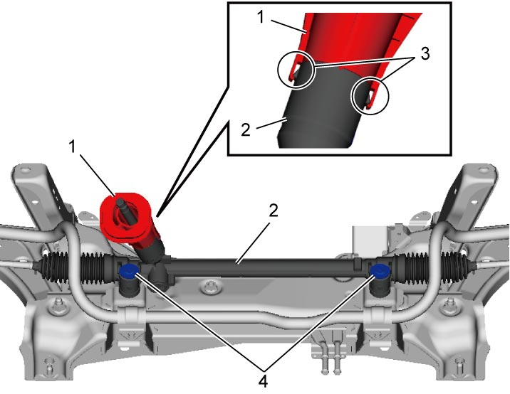
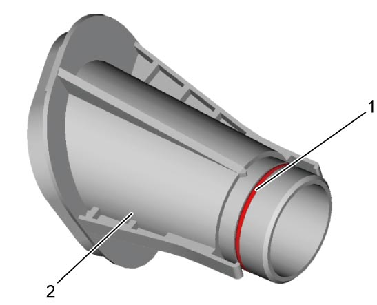
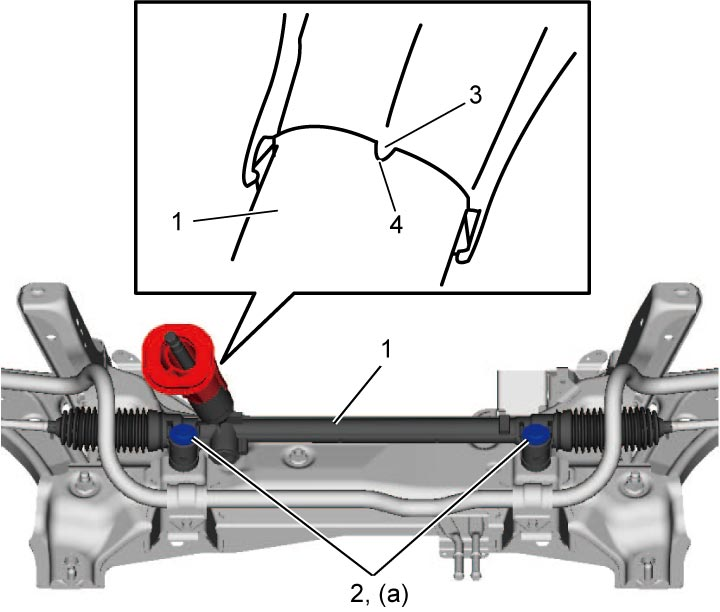

6B
| Steering Gear Case Assembly Removal and Installation |
NOTICE:
Failure to take proper precautions before starting the procedure below can result in damage to the contact coil of the air bag system.
Before starting the procedure below, set the front wheels in straight ahead position and then lock the steering wheel by changing ignition mode to “OFF” or removing ignition key at “LOCK” position.
Removal
1)Remove front suspension frame with steering gear case assembly. 
2)Remove steering gear cover (1) after detaching its claws (3) from steering gear case.
3)Remove steering gear case bolts (4), and then remove steering gear case assembly (2) from front suspension frame.


 "Expand image")
Installation
1)Install new O-ring (1) to steering gear cover (2).

 "Expand image")
2)Mount steering gear case assembly (1) to front suspension frame.
3)Install new steering gear case bolts (2) to specified torque.
NOTICE:
The steering gear case bolts are pre-coated with friction stabilizer. If these bolts are reused, they may work loose.
Never reuse the steering gear case bolts.
4)Aligning protrusion (3) of steering gear cover with notch (4) of steering gear case, install steering gear cover to steering gear case.
5)Check that steering gear cover is fastened securely with its claws.

 "Expand image")
6)Install front suspension frame with steering gear case assembly.